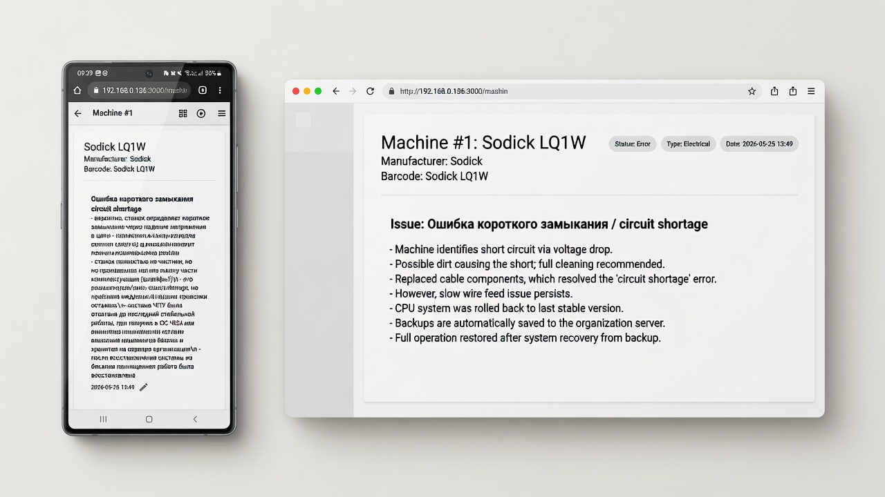
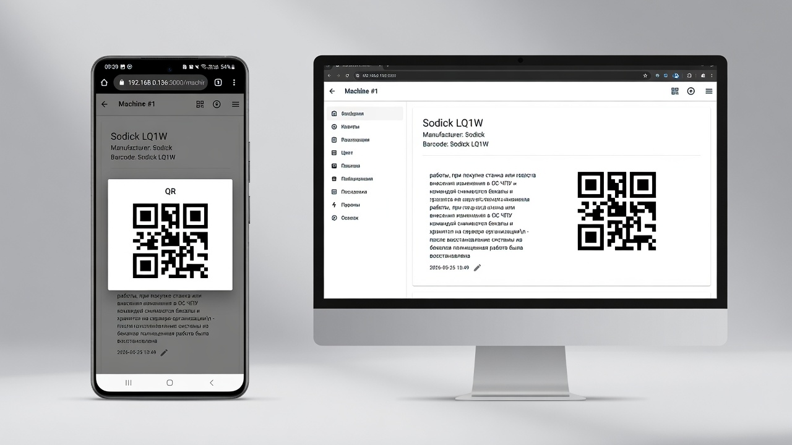

Built for troubleshooting under pressure
Machine overview
Access machine context, structure, and maintenance history in one place during diagnostics.

Fault & repair history
See previous breakdowns and how experienced engineers solved them in the past.

Log a failure during work
Quickly document symptoms and actions without breaking diagnostic flow.

Instant access via QR
Scan a QR code on the machine to immediately open its full troubleshooting context.
